Journal of Automation and Control Research (JACR)
ISSN: 2368-6677

Volume 1, Year 2014 - Pages 22-30
DOI: 10.11159/jacr.2014.003
A Jitter Compensating PID Controller to Mitigate the Detrimental Effects of Software Induced Jitter in Digital Control Systems
Chamira Perera1, Trevor Pearce1, Miodrag Bolic2
1Carleton University, Department of Systems and Computer Engineering, 1125 Colonel By Drive, Ottawa, Ontario, Canada K1S 5B6
kaluarachchigeperera@cmail.carleton.ca; pearce@sce.carleton.ca
2University of Ottawa, School of Electrical Engineering and Computer Science, 161 Louis Pasteur, Ottawa, Ontario, Canada K1N 6N5
mbolic@eecs.uottawa.ca
Abstract - Software induced delays in a digital control system can lead to degradation in performance and as a result plant response characterizing performance requirements such as percent overshoot, rise time, and settling time can be violated. In the worst case the digital control system can become unstable. These delays can be constant or varying from one period to the other. The latter type of delay is known as jitter. Existing solutions attempt to improve the performance of digital control systems in the presence of software induced delays notwithstanding shortcomings. These include but are not limited to, a lack of regard for satisfying plant response characterizing performance requirements, implementation complexity, and an increase in the runtime overhead to execute the solution. In addition, a solution to compensate for input-output and output jitter for proportional integral derivative (PID) controllers is not available in the literature. Taking the problem to be solved and shortcomings in the literature into account, this paper proposes method to design a discrete-time PID controller that compensates for sampling, input-output, and output jitter. The solution initially models the worst case delay between input to output and then places it in a model of the digital control system in the forward loop between the PID controller and plant. Subsequently, the PID controller is tuned to satisfy plant response characterizing performance requirements. The two main advantages of this solution is that plant response characterizing performance requirements are satisfied and the execution time of the PID controller remains unchanged. An evaluation of the performance using a step input experiment validate that the proposed solution is capable of satisfying plant response characterizing performance requirements whereas the uncompensated counterpart failed to satisfy one requirement. A square wave tracking experiment also demonstrated that the proposed solution improved performance.
Keywords: Jitter Compensation, Real-Time Digital Control Systems, Software Execution Delay Induced Performance Degradation, PID Controllers.
© Copyright 2015 Authors This is an Open Access article published under the Creative Commons Attribution License terms. Unrestricted use, distribution, and reproduction in any medium are permitted, provided the original work is properly cited.
Date Received: 2014-05-23
Date Accepted: 2014-09-04
Date Published: 2014-10-20
1. Introduction
Software that implements the functionality of a digital control system usually executes in a periodic manner. The three main operations of any task that implements the functionality of a digital control system (referred to as a control task in this paper) are: input sampling, calculation of the control law, and outputting the control law to the plant. Usually, the input sampling and outputting the control law are performed by hardware via the analog to digital converter (ADC) and digital to analog converter (DAC) respectively. Software is typically involved in calculating the control law. However, either software or hardware can be used to trigger the ADC and/or DAC.
Execution of the analog to digital (A/D) conversion via the ADC, digital to analog (D/A) conversion via the DAC, control law, and other software routines such as interrupt service routines (ISRs), and real-time operating system (RTOS) scheduler and context switching introduce a delay between sampling of inputs and outputting the control law to the plant. To make matters worse, the timing of these two events can vary from one sampling period to the other. This phenomenon is known as jitter. Therefore the type of delays considered in this paper vary from one period to the other, and it also considers the hardware induced delays from the ADC and DAC. This paper considers three types of jitters viz. sampling, input-output, and output jitter.
The negative effect of software induced delays (both constant and jitter) is a performance degradation, which in the worst case can lead to a violation of performance requirements. Ultimately, it could result in destabilizing the digital control system. This is the problem focused in this paper. Traditional digital control system design methodologies assume that the input sampling, control law calculation, and outputting to the plant all occur simultaneously without any delay. This oversight is one of the contributors to the performance degradation issue.
Literature in the field of improving digital control system performance due to software induced delays have several shortcomings. Firstly, not prioritizing satisfying plant response characterizing performance requirements, which are: percent overshoot, rise time, and settling time. Secondly, increased complexity and execution overhead to execute the solution. Finally, a solution to compensate for input-output and output jitter using PID controllers to the best of our knowledge was not found despite its simplicity. A review of the current state of the art is presented in Section 2.
This paper considers a collection of multiple independent single input single output (SISO) digital control systems executing in parallel on a single processor and this collection is referred to as a digital control system set. The task model, model of the digital control system set, along with four representative implementations of digital control sys-tems, which refine the digital control system model within a set are discussed in Section 3. Each implementation is referred to as a configuration in this paper.
The solution that this paper proposes is a discrete-time PID controller capable of compensating for software in-duced jitter. The solution involves modelling the worst case delay between input sampling and outputting to the plant, and placing this delay in a model of the digital control system in the forward loop between the PID controller and plant. This worst case delay between input to output is assumed to be one sampling period and this assumption is referred to as the one sampling period delay assumption. The discrete-time PID controller is tuned to satisfy performance requirements. A discussion of the proposed solution is provided in Section 4.
An evaluation of the proposed solution which involves controlling the voltage stabilizer example plant model described by Lozoya et al. [7] and Marti et al. [9] is presented in Section 5, while the performance results from the evaluation are presented in Section 6. The performance evaluation makes use of the four configurations described in Section 3. Performance results reveal that the proposed solution is capable of satisfying plant response characterizing performance requirements in the presence of software induced jitter when its uncompensated counterpart failed to fulfill at least one requirement. Finally, Section 7 provides concluding remarks.
2. Related Work
The literature for improving digital control system performance in the presence of software induced delays can be classified into three perspectives and they are described in the following subsections.
2.1. Control Systems Perspective
Compensating for software induced delays in the digital controller is the hallmark feature of solutions from the control systems perspective. Astrom and Wittenmark [3] describe a method to model a constant delay between the input and response from the plant. A tutorial by Mathworks [11] discusses how to compensate only for a constant delay using a PID controller, which leverages the method described by Astrom and Wittenmark [3].
The research by Marti et al. [8], to the best of our knowledge is the only solution that compensates for sampling jitter using a PID controller. Additionally, this solution is also intended for state feedback controllers. Smeds and Lu [13] propose to cascade an add-on compensator to the main controller to compensate for input-output jitter. This add-on compensator adds a zero near the Nyquist frequency to attenuate the control gain. The one-shot solution by Lozoya et al. [7] makes use of prediction to compensate for input-output jitter for state feedback controllers. This solution allows sampling jitter to be present, and predicts the control law which is applied at the start of the next sampling period.
2.2. Real-Time Systems Perspective
Solutions from the real-time systems perspective improve control system performance indirectly by reducing software induced delays and jitter. Adjusting the relative deadline is one method to reduce jitter, because this reduces the slack time between task response and relative deadline. Hong et al. [5] proposed an approach to adjust the relative deadline where the relative deadline is initially adjusted offline and subsequently re-adjusted online as the workload changes.
Changes can also be made to the scheduling policy to minimize jitter. The solution described by Nasri and Kargahi [12] modifies the task schedule generated by the earliest deadline first (EDF) scheduling policy. Liu et al. [6] proposed a different solution where the preemption segment of a task is changed statically to reduce software induced jitter.
2.3. Control Scheduling Co-Design Perspective
The control scheduling co-design type solutions aim to apply real-time systems and control systems approaches in a collaborative manner to design multiple digital controllers executing as real-time tasks. In addition, solutions from this perspective attempt to maximize performance of the digital controllers by applying optimization based approaches in an iterative manner. Solutions by Wu et al. [14] and Aminifar et al. [1] are examples of solutions from this perspective.
3. System Modelling
All details related to the model of the digital control system used in this paper are elaborated in this Section. The control task model is initially discussed, followed by a description of the structure of the digital control system set model. Finally, the structure and timing of the digital control system model within a set is refined to represent four realistic ways of implementing a digital control system.
3.1. Task Model
The functionality of a digital control system set considered in this paper can be modeled as a control task set: 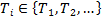. Each control task has an infinite periodic instantiation set otherwise known as a job set: 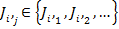. The execution of four consecutive jobs from 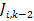 to 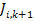 is depicted in Figure 1.
The response time, 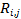(start of sampling period to event (3)) for job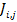is the time it takes from the start of the sampling period to output the control law to the plant. Taking the response time of a control task and one sampling period delay assumption into account (worst case delay between input to output), each control task has to adhere to the timing constraint given by (1),
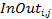 is the input sampling to outputting to the plant delay (event (2) to (3)) for job . 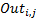 is the delay to output to the plant from the previous sampling period to the current sampling period (event (3)s from jobs 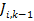 to 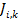). 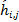is the sampling interval for job , which is the delay from the input sampling event from the previous sampling period to the current sampling period (event (1)s from jobs to ). The sampling interval is distinct from the sampling period hi. The latter is always constant while the former varies from one period to the other.
Using the terminology introduced in this Section, the three types of jitters considered in this paper are defined as follows:
- Sampling Jitter: Variation in for Ti.
- Input-output Jitter: Variation in for Ti.
- Output Jitter: Variation in 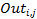 for Ti.
When there is only one digital control system in the set, input-output and output jitter also exist. This is because the A/D and D/A conversions, RTOS scheduler execution, and control law calculation can jitter. However, sampling jitter does not exist in this scenario because no other control tasks exist to interfere the trigger of the A/D conversion. As additional digital control systems are introduced into the set, the three types of jitters increase in tandem because each task interferes with the other tasks' execution.
3.2. Model Structure
The digital control system set used in this paper (also used in the performance evaluation) consists of five SISO independent digital control systems that execute in parallel. All five digital controllers of the five digital control systems execute on a single processor. The model diagram of the structure of a digital control system in a set is depicted in Figure 2.
The two ADCs and DAC are modeled as sample and hold, and zero order hold devices respectively. Both types of devices have variable execution times so that they model real ADCs and DACs. The periodic workflow of the model occurs as follows:
- Discretizing the inputs r(t) and y(t) using the ADCs via sample and hold to produce r(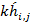) and y(j).
- Comparing r(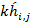) and y() to produce the error signal e().
- Executing the control law by the PID controller to produce the control signal u().
- Converting u() to a continuous time signal u(t) using the DAC and outputting it to the plant.
3.3. Configurations
A configuration is determined by the trigger method, which is either software or hardware to trigger the ADCs and DAC for all digital control systems within a set. These four configurations are described as follows:
Configuration 1: This is the most conservative configuration out of the four because minimization of jitter is the main priority. Hardware is used to trigger both the ADCs and DAC at precise instants in time.
Configuration 2: Software is used to trigger the DAC whereas hardware is used to trigger both the ADCs. Sampling jitter is completely minimized in this configuration while input-output and output jitter are much larger compared to configuration 1.
Configuration 3: Hardware is used to trigger the DAC while software is used to trigger both the ADCs. In this configuration both sampling and input-output jitter are present whereas output jitter is minimized.
Configuration 4: This is the least conservative configuration among the four due to not prioritizing jitter minimization. Software is used to trigger both the ADCs and DAC and hence, sampling, input-output, and output jitter are present.
4. Jitter Compensating PID Controller
The design of the proposed solution is carried out in two main steps, which are, continuous-time design and discrete-time design. The purpose of the continuous-time design is to determine the appropriate rise time, which is used to derive the sampling period. The equation to calculate the sampling period according to Astrom and Wittenmark [3] is give by (2),
Tr is the rise time and N is an integer. Astrom et al. suggests [4,10] whereas J. Liu suggests [10,20] for the value of N. This research uses the value of 10 because it is the middle value of the two approaches, and it results in a good trade-off between scheduling periodic software tasks and quality of control. From a control systems point of view having a low sampling period yields good control performance. On the other hand, a low sampling period creates problems for scheduling multiple tasks as it increases the processor utilization.
The resulting rise time after the design is usually less than or equal to the required rise time. Therefore, according to (2) a lower sampling period can be chosen if the rise time is decreased. Consequently, the performance of the digital control system is improved by utilizing a smaller sampling period.
After obtaining the sampling period from the continuous-time design, the next step is to discretize the continuous-time plant. Subsequently, the worst case delay between input sampling to outputting to the plant is taken as one sampling period, and placed in the forward loop between the PID controller and discrete-time plant. This worst case delay between input sampling to output is the one sampling period delay assumption. In the z domain the one sampling period delay is modeled as z−1. The diagram of this discrete-time design is shown in Figure 3.
The next step in the design process is to tune the PID controller to satisfy performance requirements. This research used the PID tuner described by Mathworks [10] from Simulink. Tuning the PID controller involves using a graphical user interface with a slider that updates the plant output response when the position of the slider changed.
Finally, the designed PID controller is interfaced with a continuous-time plant and reference input through two ADCs and a DAC. A comparison of the underlying Simulink simulation model of the PID controller that compensates for jitter against a non-jitter compensating counterpart revealed that only the P, I, and D constants were updated. This implies that the execution time of the PID controller remains unchanged. Therefore, digital control systems with already strict timing budgets can benefit from this solution.
5. Performance Evaluation
Details pertaining to evaluating performance of the proposed solution are presented in this Section. A discussion on the experimental setup is initially presented followed by a description of the method used to evaluate performance.
5.1. Experimental Setup
A Simulink simulation based evaluation of the proposed solution is carried out to determine its effectiveness in the presence of software induced jitter. The digital control system set model described in Section 3.2 is simulated. For the evaluation Simulink is used as the simulation engine and the TrueTime simulation platform by Cervin et al. [4] is used to simulate multiple control tasks executing in parallel on a single processor. TrueTime exists as a separate Simulink simulation block that can be simulated along with Simulink's native simulation blocks. This simulation block is referred to as the TrueTime kernel in the literature. A real-time kernel is used in the TrueTime kernel and EDF or Rate Monotonic (RM) is used as the task scheduling policies. This evaluation uses EDF to schedule the five digital control tasks.
In this evaluation, the performance of the following three types of digital control system sets are compared:
- NewComp: The digital control systems are implemented using the four configurations and the proposed solution (jitter compensating PID) is used.
- UnComp: The digital control systems are implemented using the four configurations and the proposed solution is not used.
- CompOnePeriod: The digital control systems are implemented using only the first configuration and the pro-posed solution is used. The fixed sampling to output delay for each digital control system is set to one sampling period. This digital control system set is similar to what is used in the literature described in Section 2.1.
During performance evaluation, all digital control systems within a set (other than CompOnePeriod) use the same configuration. Only the first digital control system in a set controls an actual plant, whereas the software for the other four digital control systems execute periodically. The only difference between first control task and the four periodic control tasks is the latter do not read from and write to ADCs and DAC respectively. Apart from that everything else that is executed in the task remains the same. The voltage stabilizer example plant presented by Lozoya et al. [7] and Marti et al. [9] is used as the plant for the first digital control system. The transfer function of this plant is given by (3),
The Simulink simulation model with TrueTime and the voltage stabilizer plant is shown in Figure 4. Design parameters including plant response characterizing performance requirements for the voltage stabilizer plant is depicted in Table 1. Reasonable requirements were formulated as these types of requirements were not provided in the literature.
Table 1. Design parameters for the voltage stabilizer digital control system example
| Parameter | Value |
| h1 | 3ms |
| % overshoot | < 10% |
| Rise time | < 30ms |
| Settling time | < 100ms |
5.2. Method of Evaluation
Two types of experiments are carried out as part of the performance evaluation which are: step input and tracking. In the first experiment, the step input is used as the reference input and performance is measured using four metrics viz. percent overshoot, rise time, settling time, and an integrated absolute error (IAE) cost function. In the second experiment, a periodic square wave function is used as the reference input. The fourth metric is only used in the tracking experiment because the other three are not applicable. According to Astrom and Wittenmark [2], the IAE cost function integrates errors up to infinity, however, in this evaluation a finite duration is considered. For the step input experiment the experiment duration is 100 h1 periods whereas for the tracking experiment 1000 h1 periods are used as the duration. In both experiments the reference input is only used by the first digital control system in a digital control system set.
6. Performance Results
The step input experiment performance results are shown in Table 2. Performance results in bold font indicate a violation of performance requirements in Table 1. When compared to Table 1, NewComp and CompOnePeriod types satisfied performance requirements, whereas UnComp was unable to satisfy the percent overshoot requirement.
Table 2. Voltage stabilizer digital control system average step input performance
| System Type | Metric | Cfg 1 | Cfg 2 | Cfg 3 | Cfg 4 |
| NewComp | % Overshoot RT (ms) ST (ms) IAE |
4.10 21.18 87.19 0.0203 |
2.92 21.66 87.75 0.0196 |
2.87 21.77 85.75 0.0198 |
2.19 22.14 85.29 0.0196 |
| UnComp | % Overshoot RT (ms) ST (ms) IAE |
12.52 26.50 93.90 0.0282 |
11.33 26.99 93.08 0.0272 |
11.57 26.95 93.99 0.0276 |
10.96 27.24 93.89 0.0272 |
| Comp1P | % Overshoot RT (ms) ST (ms) IAE |
7.69 19.95 91.33 0.0217 |
N/A N/A N/A N/A |
N/A N/A N/A N/A |
N/A N/A N/A N/A |
From a real-time systems perspective, satisfying timing constraints is important, however, results from UnComp show that despite meeting these constraints it is not a sufficient condition to ensure satisfying performance require-ments. Therefore, compensation of delays is essential. An overall improvement in NewComp compared to the other two system sets is observed according to the IAE results.
The 95% confidence intervals for the performance data in Table 2 is shown in Table 3. When comparing the confidence intervals for each metric among the three different system set types for each individual configuration, there is no overlap in the confidence intervals. This implies that the difference of a particular metric among the three system set types for each configuration is statistically significant.
Table 3. Voltage stabilizer digital control system step input performance 95% confidence intervals
| System Type | Metric | Cfg 1 | Cfg 2 | Cfg 3 | Cfg 4 |
| NewComp | % Overshoot RT (ms) ST (ms) IAE |
4.10,4.10 21.18,21.18 86.68,87.71 0.0197,0.0208 |
2.92,2.92 21.66,21.66 87.23,88.26 0.0191,0.0201 |
2.86,2.88 21.77,21.78 85.07,86.42 0.0192,0.0205 |
2.18,2.20 22.09,22.19 83.48,87.10 0.0191,0.020 |
| UnComp | % Overshoot RT (ms) ST (ms) IAE |
12.52,12.52 26.50,26.50 92.57,93.59 0.0267,0.0277 |
11.33,11.33 26.99,26.99 92.57,93.59 0.0267,0.0277 |
11.57,11.58 26.95,26.96 93.32,94.66 0.0269,0.0282 |
10.86,11.07 27.21,27.27 93.50,94.28 0.0266,0.0277 |
| Comp1P | % Overshoot RT (ms) ST (ms) IAE |
7.69,7.69 19.95,19.95 90.82,91.85 0.0213,0.0223 |
N/A N/A N/A N/A |
N/A N/A N/A N/A |
N/A N/A N/A N/A |
Tracking performance results are shown in Table 4 and it also demonstrates that NewComp performed better compared to CompOnePeriod and UnComp types.
Table 4. Voltage stabilizer digital control system average tracking performance
| System Type | Cfg 1 | Cfg 2 | Cfg 3 | Cfg 4 |
| NewComp | 1.064 | 1.040 | 1.032 | 1.019 |
| UnComp | 1.433 | 1.405 | 1.398 | 1.381 |
| Comp1P | 1.143 | N/A | N/A | N/A |
Table 5 shows the 95% confidence intervals of the performance results in Table 4. There is no overlap in the confidence intervals among the three different system set types for each configuration. This implies that the difference in performance is statistically significant.
Table 5. Voltage stabilizer digital control system tracking performance 95% confidence intervals
| System Type | Cfg 1 | Cfg 2 | Cfg 3 | Cfg 4 |
| NewComp | 1.049,1.079 | 1.026,1.055 | 1.021,1.044 | 1.009,1030 |
| UnComp | 1.418,1.448 | 1.390,1.420 | 1.386,1.410 | 1.369,1.392 |
| Comp1P | 1.128,1.158 | N/A | N/A | N/A |
The performance results are not conclusive enough to judge which configuration has the best overall performance as there is overlap in the confidence intervals for the tracking performance results among the configurations for each system type. However, configuration 2 seems to be a popular choice because most modern microcontrollers have the facility to trigger ADCs automatically without software intervention.
7. Conclusion
This paper presents a solution to compensate for software induced delays in digital control systems using PID con-trollers, and it focuses mainly on jitter compensation. The two main advantages of this solution are: plant response characterizing requirements are satisfied and the PID controller execution time remains unchanged. The latter is a huge benefit for digital controllers that execute on computer systems that already have tight timing budgets. Simulation based experiments showed that the proposed solution satisfied plant response characterizing performance requirements for the voltage stabilizer digital control system example. Performance results also revealed that satisfying timing constraints is a necessary condition to satisfy performance requirements, however, it is not a sufficient condition. Compensation of delays is essential to obtain the required performance. According to the IAE metric, an improvement in performance is observed in the proposed solution when used in digital control systems that output the control law to the plant with an input to output delay less than one sampling period compared to digital control systems that have an input to output delay of one sampling period. This implies that reducing the delay between input to output is necessary to improve performance.
References
[1] Aminifar, A., Eles, P., Peng, Z. & Cervin, A. (2013), Control-quality driven design of cyber-physical systems with robustness guarantees, in 'Design, Automation & Test in Europe (DATE 2013)', Grenoble, France, pp. 1093-1098. View Article
[2] Åström, K. J. & Wittenmark, B. (1995), PID Controllers: Theory, Design, and Tuning, second edn, The Instrument Society of America, Research Triangle Park, NC. View Book
[3] Åström, K. J. & Wittenmark, B. (2011), Computer-Controlled Systems, third edn, Dover Publications, Mineola, NY. View Book
[4] Cervin, A., Henriksson, D., Lincoln, B., Eker, J. & Årzén, K. E. (2003), 'How does control timing affect performance? analysis and simulation of timing using Jitterbug and TrueTime', IEEE Control Systems Magazine 23(3), 16-30. View Article
[5] Hong, S., Hu, X. S. & Lemmon, M. D. (2010), Reducing delay jitter of real-time control tasks through adaptive deadline adjustments, in 'Real-Time Systems (ECRTS), 2010 22nd Euromicro Conference on', Brussels, Belgium, pp. 229-238. View Article
[6] Liu, Z., Zhao, H., Li, P. & Wang, J. (2009), An optimization model for IO jitter in device-level RTOS, in 'Information Technology: New Generations, 2009. ITNG '09. Sixth International Conference on', Las Vagas, Nevada, USA, pp. 1528-1533. View Article
[7] Lozoya, C., Velasco, M. & Marti, P. (2008), 'The one-shot task model for robust real-time embedded control systems', IEEE Transactions on Industrial Informatics 4(3), 164-174. View Article
[8] Marti, P., Fuertes, J. M., Fohler, G. & Ramamritham, K. (2001), Jitter compensation for real-time control systems, in 'Real-Time Systems Symposium, 2001. (RTSS 2001). Proceedings. 22nd IEEE', London, England, pp. 39-48. View Article
[9] Marti, P., Velasco, M., Fuertes, J., Camacho, A. & Buttazzo, G. (2010), 'Design of an embedded control system laboratory experiment', IEEE Transactions on Industrial Electronics 57(10), 3297-3307. View Article
[10] Mathworks (2013), Simulink©Control DesignTMUsers Guide. View Article
[11] Mathworks (2014), 'Modeling computational delay and sampling effects'. consulted 18 October 2014. URL: View Article
[12] Nasri, M. & Kargahi, M. (2012), A method for improving delay-sensitive accuracy in real-time embedded systems, in 'Embedded and Real-Time Computing Systems and Applications (RTCSA), 2012 IEEE 18th International Confer-ence on', Seoul, Korea, pp. 378-387. View Article
[13] Smeds, K. & Lu, X. (2012), 'Effect of sampling jitter and control jitter on positioning error in motion control systems', Precision Engineering 36(2), 175-192. View Article
[14] Wu, Y., Buttazzo, G., Bini, E. & Cervin, A. (2010), 'Parameter selection for real-time controllers in resource-constrained systems', IEEE Transactions on Industrial Informatics 6(4), 610-620. View Article